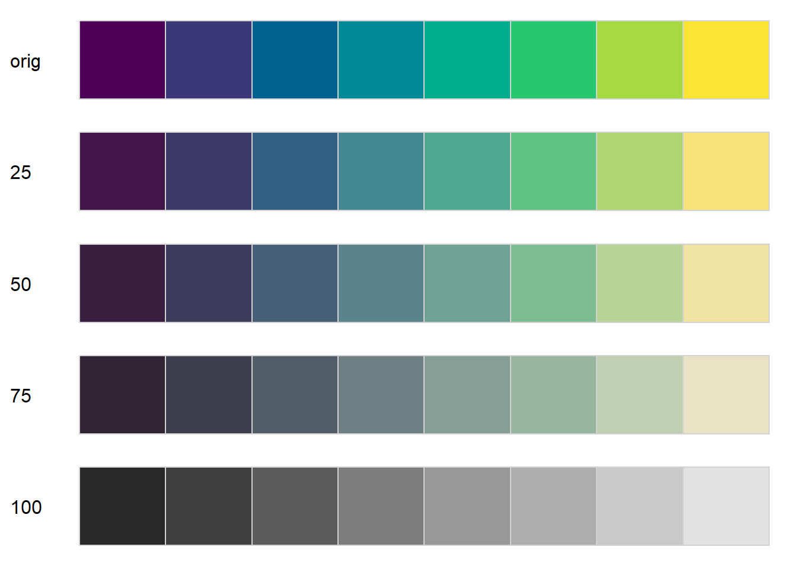

knitr::opts_knit$set(root.dir = rprojroot::find_rstudio_root_file())hcl exploration
Using knitr::inline_expr(r message = FALSE, warning = FALSE) hopefully stops it printing all the package messages
library(tidyverse) # Overkill, but easier than picking and choosing
library(colorspace)Finding colors to use for a given plot can be a pain. I’m trying to find some good color ramps for a project, and also sort out manipulating those colors to allow fading. This is me playing around to try to understand how to do those manipulations and looking at the various potential color palettes.
Colorspace (https://colorspace.r-forge.r-project.org/index.html) is a particularly useful package (though it is not the only color package I use).
Colorspace uses a hue-chroma-luminance specification for colors that is really powerful. It also has built-in palettes. For some other work, I was interested in exploring moving along those dimensions and generating color palettes for plotting.
Previously (for the project that gave rise to looking at fading colors), I was using purples and emerald, so let’s start there. But for simplicity switch to greens so constant hue.
swatchplot(
'Purples' = sequential_hcl(8, 'Purples'),
'Greens' = sequential_hcl(8, 'Greens'))I actually like those single-hue fades a lot for showing more or less of something. But it SHOULD be possible to do a hue shift from green to purple for one axis? will that make sense?
Hue sequences
I’d like to be able to specify the endpoints of a hue sequence and just shift along that axis. I’ll try it out with the purple and green above.
First, I want to try to get the hue values (and the L and C as well) to make the endpoints. I can’t find a straightforward extraction in colorspace to get the HCLs though. So, since I know the endpoints are coming from those palettes above, I want their values. Make the palette, turn it into RGB, then turn the RGB into polarLUV to get the three axis values. Here, rows are the 8 fades in the palettes above.
rgbpurps <- hex2RGB(sequential_hcl(8, 'Purples'))
luvpurps <- as(rgbpurps, 'polarLUV')
luvpurps L C H
[1,] 19.88570 55.128356 274.8415
[2,] 34.37280 69.304529 274.3131
[3,] 47.99202 56.799744 273.3506
[4,] 60.90031 43.200021 272.3221
[5,] 72.77975 31.772302 271.4182
[6,] 83.46538 21.076091 271.6285
[7,] 92.78865 10.863733 268.7090
[8,] 98.79258 2.985742 276.3941That’s sure roundabout, going palette that’s polarLUV under the hood but returns in hex to rgb and then back to polarLUV. Seems to work though.
swatchplot(hex(luvpurps))rgbgrns <- hex2RGB(sequential_hcl(8, 'Greens'))
luvgrns <- as(rgbgrns, 'polarLUV')
luvgrns L C H
[1,] 25.06952 33.792199 132.8916
[2,] 40.15678 49.456834 132.0640
[3,] 54.06676 63.854764 129.4059
[4,] 66.47833 62.340742 126.5380
[5,] 77.49000 47.581607 123.8001
[6,] 86.86700 33.248323 120.6451
[7,] 93.95644 19.112933 117.4570
[8,] 98.08100 5.367478 116.7639I can swatchplot them up together.
swatchplot(hex(luvpurps), hex(luvgrns))Now, the goal is actually to identify those dark colors and transition between them. Now, can I get from purple to green? The L and C are quite different, unfortunately. Pick something the middle?
Hardcode numbers for now, though ideally we’ll get to a function that takes a start and end value.
pg <- polarLUV(L = 20, C = 40, H = seq(from = 130, to = 275, length.out = 8))
swatchplot(hex(pg))Warning in max(nchar(rnam) - 1L): no non-missing arguments to max; returning
-InfThat fails. So, now we learned the ranges of the other axes matter. Likely chroma?
# Fails
max_chroma(h = seq(from = 130, to = 275, length.out = 8), l = 20)[1] 29.55000 19.90429 16.62571 16.05429 17.74000 23.18000 41.07429 66.11000Can I just use the minimum max_chroma? Not really…
# Guessing I can't just go with 16, but let's try
pg <- polarLUV(L = 20, C = 16, H = seq(from = 130, to = 275, length.out = 8))
swatchplot(hex(pg))If I try to fix how dark that is with chroma, it doesn’t work very well and I still lose one.
pg <- polarLUV(L = 20,
C = max_chroma(h = seq(from = 130, to = 275, length.out = 8), l = 20),
H = seq(from = 130, to = 275, length.out = 8))
swatchplot(hex(pg))Using a matrix isn’t the answer- same thing, though a floor argument puts the missing color back
hclmat <- cbind(20, max_chroma(h = seq(from = 130, to = 275, length.out = 8), l = 20, floor = TRUE),
seq(from = 130, to = 275, length.out = 8))
pg <- polarLUV(hclmat)
swatchplot(hex(pg))Guessing I don’t want to just turn up luminance, but let’s see what that does to get a better sense how this all works.
hclmat <- cbind(80, max_chroma(h = seq(from = 130, to = 275, length.out = 8), l = 80, floor = TRUE),
seq(from = 130, to = 275, length.out = 8))
pg <- polarLUV(hclmat)
swatchplot(hex(pg))Lower luminance does work OK, but it’s still ‘darker’ in the middle and the shift to blue on the right is abrupt. The darker middle is likely why a lot of the colorspace palettes have triangular luminance. I don’t particularly want to get so fine-tuned here. I was looking for a way to programatically define these sequences, and getting into tweaking luminance in a nonlinear and nonmonotonic way could get very bespoke very quickly. Likely better to just use the built-in palettes where someone who understands color theory has already done that.
hclmat <- cbind(50, max_chroma(h = seq(from = 130, to = 275, length.out = 8), l = 50, floor = TRUE),
seq(from = 130, to = 275, length.out = 8))
pg <- polarLUV(hclmat)
swatchplot(hex(pg))Fading
I also want to make faded versions of palettes, and control levels of fade. The particular use I have in mind is to illustrate levels of uncertainty, but it could be any bivariate outcomes.
I originally thought that I would need to manually adjust the chroma and luminance manually. But the exploration above suggests they interact and so it’s unlikely to just shift one or the other. Still, colorspace provides lighten, darken (which both shift luminance), and desaturate, which shifts chroma. I should be able to play with these to see how they work using either a homebrew base palette as above or the inbuilt ones.
In either case, we need the hex values
hexcols <- hex(pg)Lighten (increase luminance)
swatchplot('orig' = hexcols,
'25' = lighten(hexcols, amount = 0.25),
'50' = lighten(hexcols, amount = 0.5),
'75' = lighten(hexcols, amount = 0.75),
'100' = lighten(hexcols, amount = 1))Darken (decrease luminance)
swatchplot('orig' = hexcols,
'25' = darken(hexcols, amount = 0.25),
'50' = darken(hexcols, amount = 0.5),
'75' = darken(hexcols, amount = 0.75),
'100' = darken(hexcols, amount = 1))Desaturate (adjust chroma)
swatchplot('orig' = hexcols,
'25' = desaturate(hexcols, amount = 0.25),
'50' = desaturate(hexcols, amount = 0.5),
'75' = desaturate(hexcols, amount = 0.75),
'100' = desaturate(hexcols, amount = 1))For my particular use, I like desaturating better, in that it implies less information. But it also makes the values look more similar across the range, and we don’t want that. That gets captured better by lightening.
As a bit of an aside, the ends of the lightened versions are effectively ‘Purples’ and ‘Greens’, reading down instead of across. What does it look like if I desaturate those built-in palettes?
purp8 <- sequential_hcl(8, 'Purples')
swatchplot('orig' = purp8,
'25' = desaturate(purp8, amount = 0.25),
'50' = desaturate(purp8, amount = 0.5),
'75' = desaturate(purp8, amount = 0.75),
'100' = desaturate(purp8, amount = 1))It does remove color, but it perceptually darkens as well, which is NOT what I want.
What about choosing a pre-built set of colors and lightening/darkening? Start with viridis, we know it has good properties in greyscale, etc.
vir8 <- sequential_hcl(8, 'Viridis')
swatchplot('orig' = vir8,
'25' = lighten(vir8, amount = 0.25),
'50' = lighten(vir8, amount = 0.5),
'75' = lighten(vir8, amount = 0.75),
'100' = lighten(vir8, amount = 1))That actually works pretty well, even though the original had a luminance ramp on it already (https://colorspace.r-forge.r-project.org/articles/approximations.html), this just shifts it each time, I think. We can compare using specplot.
specplot(vir8, lighten(vir8, amount = 0.75))What does a desaturated viridis look like?
swatchplot('orig' = vir8,
'25' = desaturate(vir8, amount = 0.25),
'50' = desaturate(vir8, amount = 0.5),
'75' = desaturate(vir8, amount = 0.75),
'100' = desaturate(vir8, amount = 1))
Again, makes them more similar, though the underlying luminance ramp helps. I don’t like that the first level still ends up darker though.
Interacting chroma and luminance
So, changing luminance makes colors brighter or darker, while adjusting chroma removes color but tends to make them darker. Neither is exactly what I want- a color ramp that look the same, just “faded”. Is the answer to control this interaction? Does a simultaneous lighten and desaturate give me what I want by avoiding the perceptual darkening from the desaturation?
swatchplot('orig' = vir8,
'25' = desaturate(vir8, amount = 0.25) %>%
lighten(amount = 0.25),
'50' = desaturate(vir8, amount = 0.5) %>%
lighten(amount = 0.5),
'75' = desaturate(vir8, amount = 0.75) %>%
lighten(amount = 0.75),
'100' = desaturate(vir8, amount = 1) %>%
lighten(amount = 1))That works really well, actually. Does the order of operations matter? No:
swatchplot('orig' = vir8,
'25' = lighten(vir8, amount = 0.25) %>%
desaturate(amount = 0.25),
'50' = lighten(vir8, amount = 0.5) %>%
desaturate(amount = 0.5),
'75' = lighten(vir8, amount = 0.75) %>%
desaturate(amount = 0.75),
'100' = lighten(vir8, amount = 1) %>%
desaturate(amount = 1))
Did I just get lucky with viridis, or does it work with other palettes too? how about my ramp that I made from green to purple? Seems to:
swatchplot('orig' = hexcols,
'25' = lighten(hexcols, amount = 0.25) %>%
desaturate(amount = 0.25),
'50' = lighten(hexcols, amount = 0.5) %>%
desaturate(amount = 0.5),
'75' = lighten(hexcols, amount = 0.75) %>%
desaturate(amount = 0.75),
'100' = lighten(hexcols, amount = 1) %>%
desaturate(amount = 1))Does the lighten and desat work for the single-hue scales? Seems like it shouldn’t because they’re already changing along those axes.
swatchplot('orig' = purp8,
'25' = lighten(purp8, amount = 0.25) %>%
desaturate(amount = 0.25),
'50' = lighten(purp8, amount = 0.5) %>%
desaturate(amount = 0.5),
'75' = lighten(purp8, amount = 0.75) %>%
desaturate(amount = 0.75),
'100' = lighten(purp8, amount = 1) %>%
desaturate(amount = 1))
Not really. It basically does what it should, but the light end is just always light and so doesn’t contain info in the faded dimension and very similar colors appear in both dimensions- values at row n and col m are frequently very similar to row n + 1 and col m - 1.
I suppose that might be OK for particular situations, but still not ideal. Might work ok though if we limited that lower end? ie don’t let it fall all the way to white in the original? Getting pretty hacky at that point and the diagonals are still too similar.
swatchplot('orig' = purp8[1:6],
'25' = lighten(purp8[1:6], amount = 0.25) %>%
desaturate(amount = 0.25),
'50' = lighten(purp8[1:6], amount = 0.5) %>%
desaturate(amount = 0.5),
'75' = lighten(purp8[1:6], amount = 0.75) %>%
desaturate(amount = 0.75),
'100' = lighten(purp8[1:6], amount = 1) %>%
desaturate(amount = 1))Testing with other palettes
Viridis and the one I made are both fine, but look at a couple other palettes too. This is not comprehensive, mostly looking at those that have greens and purples for the use I have in mind.
Write a little function to do the fade and make this less cut and paste
palcheck <- function(palname, n = 8) {
pal8 <- sequential_hcl(n, palname)
swatchplot('orig' = pal8,
'25' = lighten(pal8, amount = 0.25) %>%
desaturate(amount = 0.25),
'50' = lighten(pal8, amount = 0.5) %>%
desaturate(amount = 0.5),
'75' = lighten(pal8, amount = 0.75) %>%
desaturate(amount = 0.75),
'100' = lighten(pal8, amount = 1) %>%
desaturate(amount = 1))
}Plasma
palcheck('Plasma')Green-based
ag_GrnYl is OK, but does get a bit of the diagonal issue
palcheck('ag_GrnYl')ditto Emrld, but might work?
palcheck('Emrld')Terrains might be OK? 2 is less gaudy
palcheck('Terrain')palcheck('Terrain2')mints and TealGrn fail diagonal test
palcheck('Dark Mint')
palcheck('Mint')palcheck('TealGrn')YlGn is pretty good, actually.
palcheck('YlGn')For the specific use, keep in mind that it will be two levels of fade, and so I can do something like orig and 75% and it’ll be pretty different. But here I’m trying to be fairly general.
Meh
palcheck('BluGrn')
as expected, batlow and Hawaii are extreme, though might be OK?
palcheck('Batlow')palcheck('Hawaii')Purple-based
single hue doesn’t work
palcheck('Purples')palcheck('Purples 3')these are all maybes with tricky diagonals
palcheck('Purple-Blu')palcheck('Purple-Ora')palcheck('Purp')palcheck('PurpOr')palcheck('Sunset')palcheck('Magenta')palcheck('SunsetDark')pretty good, but have a fair amount of green in, so could be confusing
palcheck('Purple-Yellow')palcheck('Viridis')palcheck('Mako')Plasma pretty good
palcheck('Plasma')
Inferno might actually be pretty good if I cut off the first one
palcheck('Inferno')ag_Sunset is better on the diagonals than similar hue sequences
palcheck('ag_Sunset')
Good, but would need to cut the last one; too white. It is less gaudy/ more obviously a hue ramp than ag sunset. Diagonals are tricky too
palcheck('RdPu')Pretty good, but blue could be an issue getting confused with water for this project.
palcheck('BuPu')
Continuous hue from specified palettes
If I want to map values to colors continously, that gets tricky using the specified palettes because sequential_hcl takes an n argument.
Can I get the endpoints and make my own (as I did above with green and purple?)
does the one I’m using use a linear hue scale
specplot(sequential_hcl(8, 'ag_Sunset'))It does, but doesn’t use linear chroma. and it has luminance shift too.
Can I extract the hue from the ends? The same way I did right at the beginning for the greens and purples.
specplot(sequential_hcl(2, 'ag_Sunset'))rgbsun <- hex2RGB(sequential_hcl(8, 'ag_Sunset'))
luvsun <- as(rgbsun, 'polarLUV')
luvsun L C H
[1,] 25.00933 69.80052 274.922758
[2,] 33.57582 78.49556 296.995075
[3,] 42.09671 87.16488 318.944488
[4,] 50.70304 96.81962 341.141446
[5,] 59.33484 102.07413 3.730076
[6,] 67.89723 89.83472 25.626328
[7,] 76.47041 74.80664 47.677726
[8,] 84.95182 45.16493 69.593540This generates the wrong thing (roughly, viridis) because the hue crosses 0
sunmat <- cbind(seq(from = 85, to = 25, length.out = 8),
max_chroma(h = seq(from = 69, to = 275, length.out = 8),
l = seq(from = 85, to = 25, length.out = 8),
floor = TRUE),
seq(from = 69, to = 275, length.out = 8))
pgsun <- polarLUV(sunmat)
swatchplot(hex(pgsun))Can I fix the zero-crossing? I’m sure there’s a polar coord package, but for now, add a 360 and take it off
hvec <- seq(from = luvsun@coords[1, 3], to = 360+luvsun@coords[8,3], length.out = 8)
hvec[hvec > 360] <- hvec[hvec>360]-360
lvec <- seq(from = luvsun@coords[1, 1], to = luvsun@coords[8, 1], length.out = 8)The max_chroma is intense, but not sure how else to choose the chromas if we’re trying to build a continuous ramp. Could just use n = 1000 or something to get pseudo-continuous
sunmat <- cbind(lvec,
max_chroma(h = hvec,
l = lvec,
floor = TRUE),
hvec)
pgsun <- polarLUV(sunmat)
swatchplot(hex(pgsun))So, one option is just treating the built-in palettes as their endmembers like that and then doing it as I did before. But it does lose the actual built-in palettes, especially chroma or nonlinearity. Likely better to just use a large n for now and call it good.